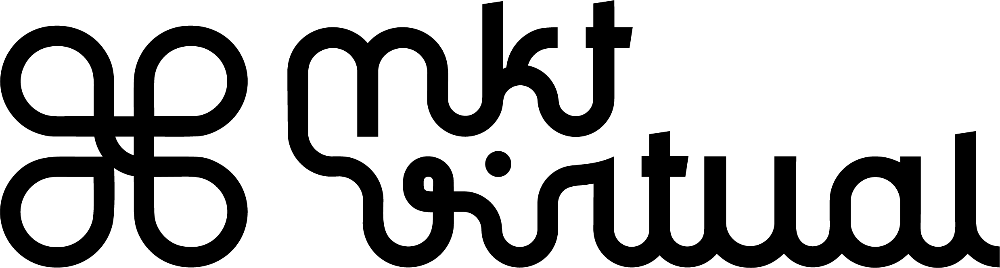
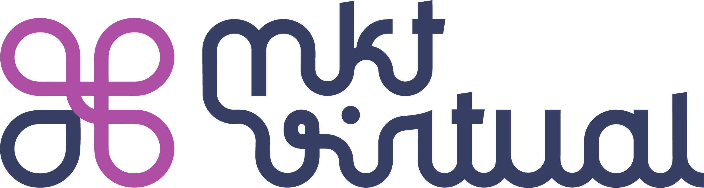
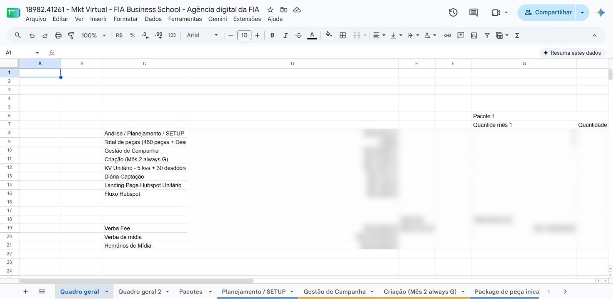
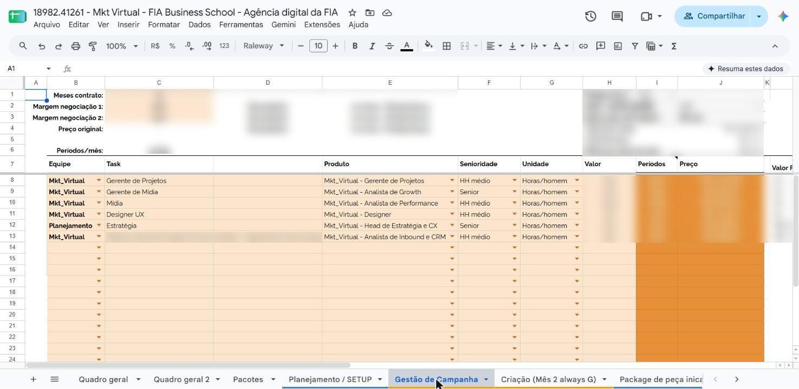
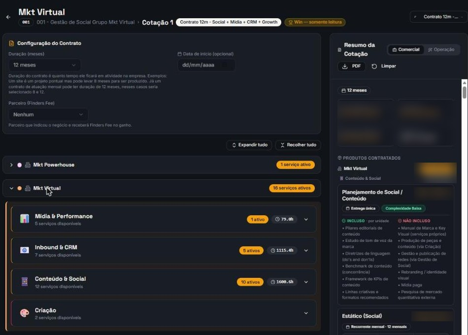
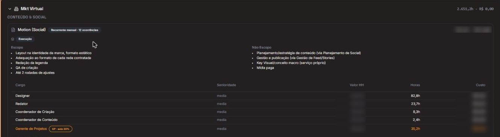
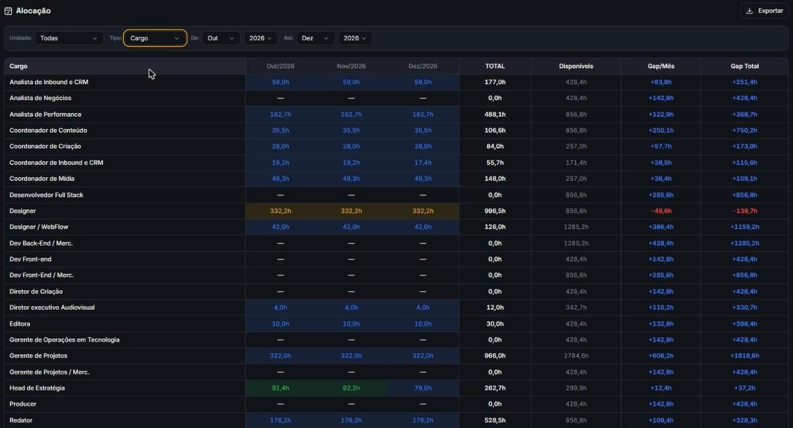
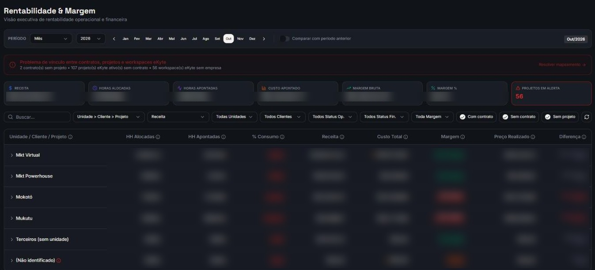
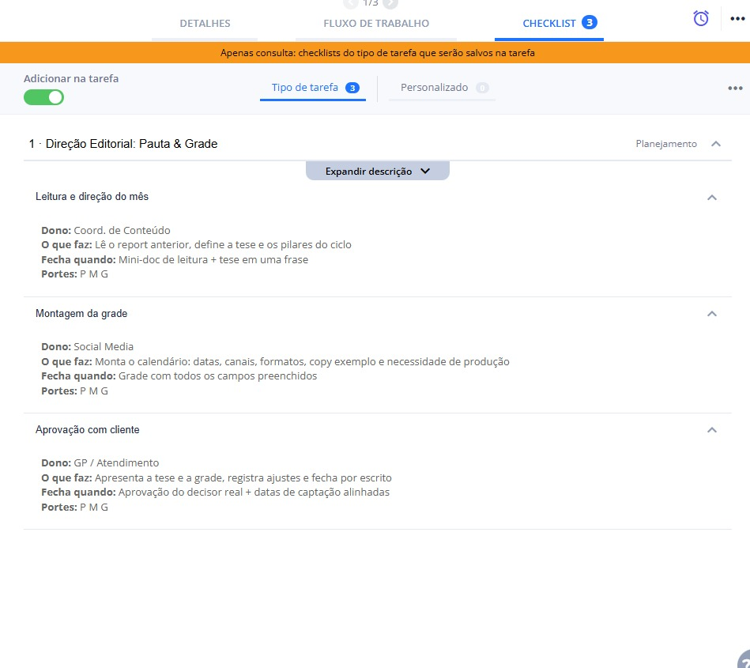

Do que a gente vende até como opera o que foi vendido. Hoje a gente abre cada etapa, nesta ordem.



Menos discutir quantas horas e quanto custa cada item.
Mais conversa sobre o que o cliente precisa.

Recriação da tela de orçar. Na tela real, cada item traz escopo, não escopo e horas por cargo.A gente não vende peça solta. Vende estratégia: o caminho que leva o cliente aonde ele quer chegar.
Todo serviço segue a mesma lógica: imergir, planejar, executar e acompanhar.
Os tamanhos são balizadores: o que o cliente já tem e onde ele quer chegar definem o ponto de partida.
Da estratégia de conteúdo ao report, com a mesma esteira para todo cliente.
Pilares editoriais, tom de voz e estudo de persona.
Direção EditorialMote do período, pauta por pilar e briefing peça a peça.
Report de ResultadosResultado do mês, análise de formatos, insights e plano de ação.
Impulsionamento + Report de Mídia (add-on)Verba nos posts aprovados, ajuste de segmentação e report do período.
Poucos produtos, mas a Gestão de Mídia é grande: quatro blocos de escopo, um time inteiro.
Até 3 concorrentes, 3 a 4 canais, 2 ofertas, já com camada de CRM.
Gestão de Mídia3 a 4 plataformas, sprints quinzenais e leitura estratégica integrada.
Peças de MídiaArte e copy do anúncio, adaptadas aos formatos das plataformas.
Do diagnóstico do funil à régua no ar, com lead scoring e evolução todo mês.
3 a 5 réguas em e-mail e canal adicional, templates redigidos e 1 integração com o CRM.
Lead ScoringPontuação por perfil, faixas de temperatura e critério de MQL.
Gestão de Fluxos e RéguasFluxos no ar, base higienizada e entregabilidade monitorada.
Mesmas peças, montagens diferentes. Cada peça já vem com escopo, não escopo e horas.
As peças escolhidas viram cotação, o ganho vira contrato e o link do contrato desce para o Ekyte.

Nova venda
↗ link do contratoO que foi vendido, peça por peça: escopo, não escopo e horas.

As horas vendidas por cargo, mês a mês, contra o que o time tem.

A hora apontada contra a vendida, em consumo e margem.
O GP organiza como fizer sentido para a conta. Cliente com várias campanhas rodando: um projeto para cada uma, com as tarefas lá dentro.

Checklist do template 1 · Direção EditorialNo Ekyte, o fluxo se chama Fluxo Único Mkt Virtual.
Um kanban só para a casa inteira, com as mesmas colunas para post, campanha e régua. Simulação.
Etapas e templates podem mudar com a sugestão do time: é só direcionar ao Douglas.
A gente está fazendo isso para ajudar o time, os GPs e a gestão. Tudo evolui, e com a contribuição de todos.
O que não muda: todo mundo seguindo da mesma forma.
| Combinado | Quem | A partir de |
|---|---|---|
| Todo orçamento entra por tarefa "Orçar" com briefing | Comercial | a combinar |
| Orçamento e contrato circulam por link do Mkt OS | Operação e comercial | já vale (23/09) |
| Toda tarefa nova nasce de um template do Fluxo Único | GPs | novembro (proposta) |
| Todo projeto ativo ligado a um contrato | GPs e Operação | novembro (proposta) |
| Ler consumo e margem de cada conta | GPs e gestores | cadência a combinar |